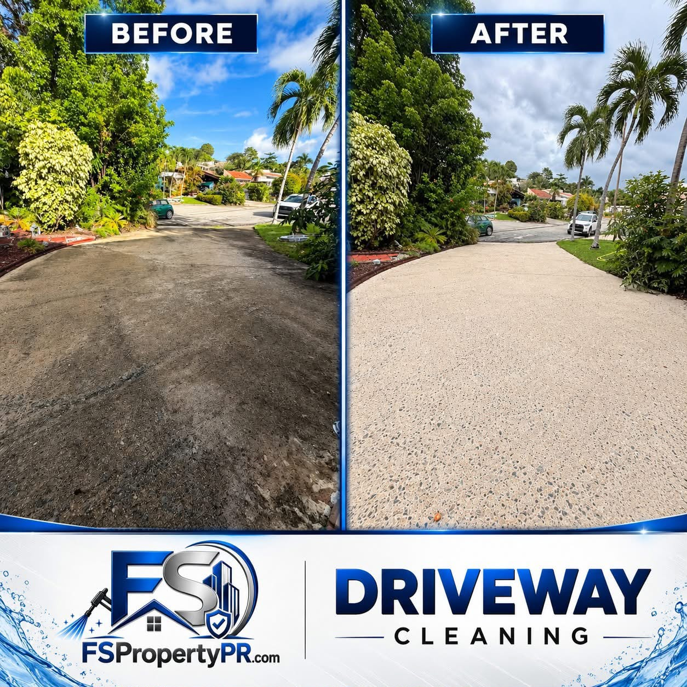
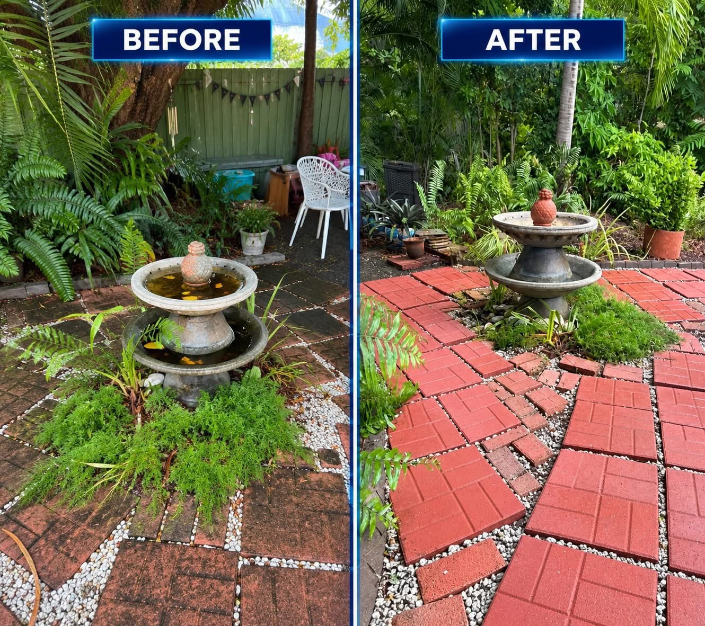
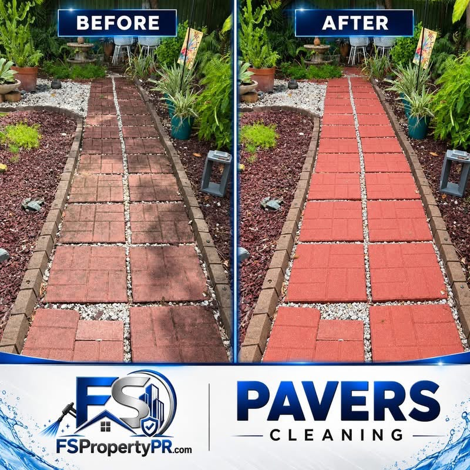

Past Job Photos
See the difference from our pressure washing work. Select a photo to view it full size.



See the difference from our pressure washing work. Select a photo to view it full size.


